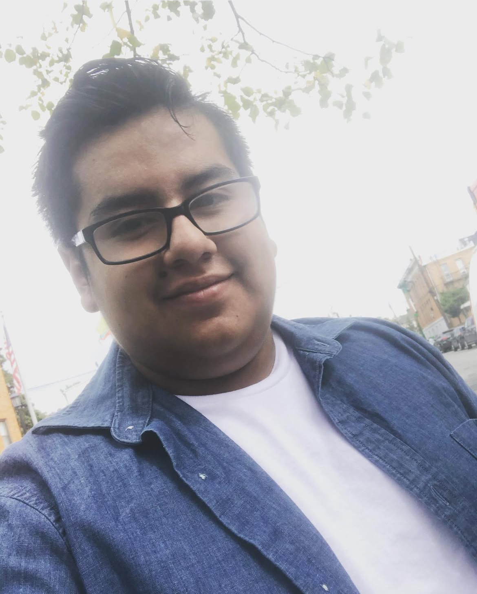
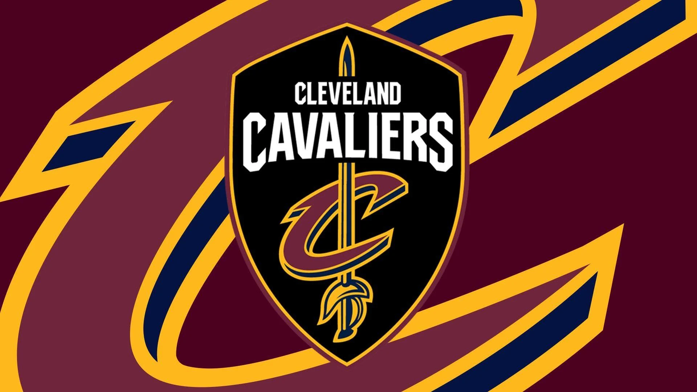

Hello my name is Diego Aldas. I am a junior here at Babson College. To me home is New York city it is where most of my family that is here in the country lives. I am a big sports fan, particularly two sports one of them being the NBA and the second one being soccer. I am a Cleveland Cavaliers fan for the NBA and for soccer I am a huge FC Barcelona fan, a team I have been watching since 2014.
My journey here at Babson has been a very interesting one. I have had a great amount of fun and have done a great amount of learning as well. In terms of where this journey takes me I have declared a concentration in Data analytics and its one of the reasons why I am taking this course because it is an elective option but also because I have always been interested in coding and how to do it as a data analyst I am sure I would have to be comfortable with some part of the web and this course is something I am hoping will help me do that. Lastly, this year I was lucky enough to land an internship for this upcoming summer at Jp Morgan as a data analyst intern. In terms of the future I tend to fulfill the internship to the best of my abilities and hopefully receive a return offer for when I graduate.
On my spare time I like to game on my PS5 particularly from CAPCOM my favorite series to play is the Resident Evil franchise. In addition to that I am also a big fan of FIFA by EA sports. Along with gaming I like to watch the NBA specifically CAVS games and soccer games in the Spanish league and the champions league. Lastly I also enjoy hanging out with friends and playing sports with my friends as well we play basketball at LRAC in the evening 2-3 times a week.
